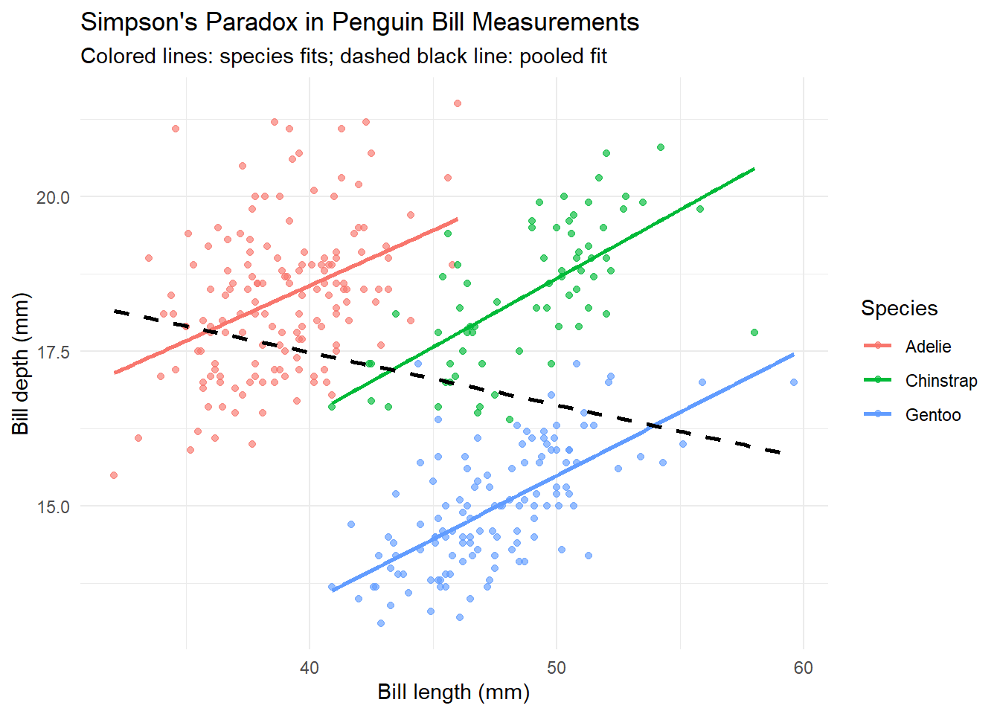
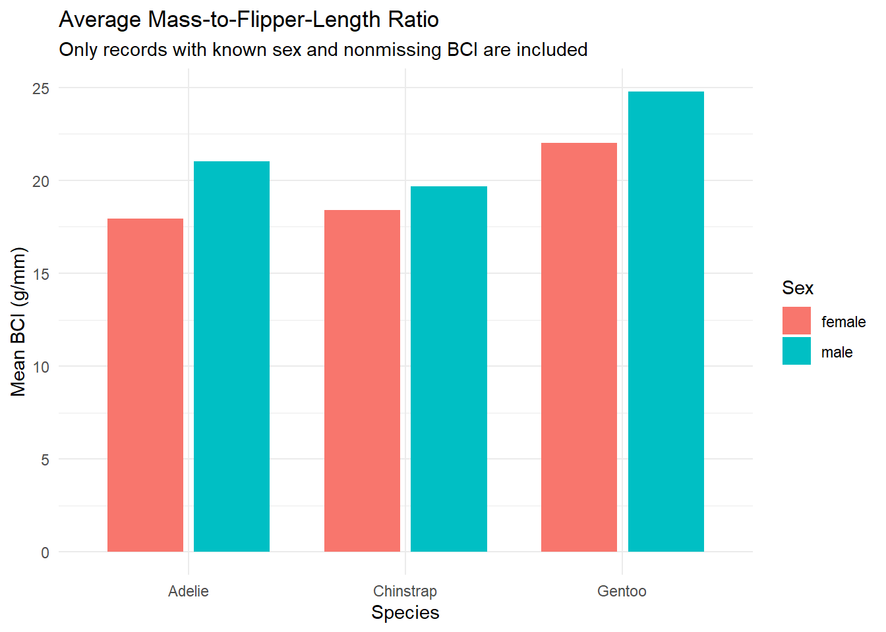

library(reticulate)
library(palmerpenguins)
library(dplyr)
library(ggplot2)
# Use a plain data frame for straightforward conversion to pandas.
penguins_data <- as.data.frame(palmerpenguins::penguins)Penguin Measurements Across R and Python
Introduction
This analysis uses the Palmer Penguins dataset from Palmer Station Antarctica LTER.
We investigate two questions:
- Does the relationship between bill length and bill depth change when penguins are grouped by species?
- How does average body mass relative to flipper length differ across species and sex?
R loads the dataset and calculates the overall correlation. Python accesses the R data object, calculates species-level correlations, and creates a mass-to-flipper-length ratio. The resulting data objects return to R for ranking and visualization.
Setup
The document uses the knitr engine. Python chunks run through reticulate, allowing objects to be shared between languages.
Calculation 1: Overall correlation in R
We use observations with both bill measurements available.
overall_corr <- cor(
penguins_data$bill_length_mm,
penguins_data$bill_depth_mm,
use = "complete.obs"
)
overall_results <- data.frame(
complete_pairs = sum(
complete.cases(
penguins_data[, c("bill_length_mm", "bill_depth_mm")]
)
),
correlation = round(overall_corr, 3)
)
knitr::kable(overall_results)| complete_pairs | correlation |
|---|---|
| 342 | -0.235 |
Calculation 2: Species-level correlations in Python
The expression r.penguins_data accesses the data frame created in R. reticulate converts it to a pandas DataFrame.
We also access the R scalar overall_corr to compare the pooled correlation with the species-level results.
import pandas as pd
# Transfer the R data frame into Python.
penguins_py = r.penguins_data.copy()
correlation_rows = []
for species, group in penguins_py.groupby("species", observed=True):
complete = group.dropna(
subset=["bill_length_mm", "bill_depth_mm"]
)
correlation_rows.append({
"species": str(species),
"complete_pairs": len(complete),
"correlation": complete["bill_length_mm"].corr(
complete["bill_depth_mm"]
)
})
species_correlations = pd.DataFrame(correlation_rows)
print(f"Overall correlation from R: {float(r.overall_corr):.3f}")Overall correlation from R: -0.235print(species_correlations.round(3).to_string(index=False)) species complete_pairs correlation
Adelie 151 0.391
Chinstrap 68 0.654
Gentoo 123 0.643The pooled correlation is negative, but each species has a positive correlation. This reversal illustrates Simpson’s paradox: combining groups can produce a relationship that differs from the relationships within those groups.
Species differ in their typical bill dimensions, so the pooled association mixes within-species and between-species variation.
Visualizing the reversal in R
Colored lines show separate linear fits for each species. The dashed black line shows the pooled fit across all species.
bill_data <- penguins_data %>%
filter(
!is.na(bill_length_mm),
!is.na(bill_depth_mm)
)
ggplot(
bill_data,
aes(
x = bill_length_mm,
y = bill_depth_mm,
colour = species
)
) +
geom_point(alpha = 0.65) +
geom_smooth(method = "lm", se = FALSE) +
geom_smooth(
aes(group = 1),
method = "lm",
se = FALSE,
colour = "black",
linetype = "dashed"
) +
labs(
title = "Simpson's Paradox in Penguin Bill Measurements",
subtitle = "Colored lines: species fits; dashed black line: pooled fit",
x = "Bill length (mm)",
y = "Bill depth (mm)",
colour = "Species"
) +
theme_minimal()
Calculation 3: Mass-to-flipper-length ratio in Python
For consistency with the original analysis, we call this ratio BCI:
\[ \mathrm{BCI} = \frac{\text{body mass (g)}}{\text{flipper length (mm)}}. \]
This ratio has units of grams per millimeter. It is a descriptive measure, not a validated health indicator.
We calculate the ratio for individual penguins, then average it within species–sex groups. Records with missing sex or missing BCI are excluded from these group summaries.
penguins_bci = penguins_py.copy()
penguins_bci["bci"] = (
penguins_bci["body_mass_g"]
/ penguins_bci["flipper_length_mm"]
)
bci_complete = penguins_bci.dropna(
subset=["species", "sex", "bci"]
)
bci_profile = (
bci_complete
.groupby(["species", "sex"], observed=True)
.agg(
mean_bci=("bci", "mean"),
sd_bci=("bci", "std"),
n=("bci", "count")
)
.reset_index()
)
print(bci_profile.round(3).to_string(index=False)) species sex mean_bci sd_bci n
Adelie female 17.944 1.397 73
Adelie male 21.017 1.682 73
Chinstrap female 18.402 1.457 34
Chinstrap male 19.686 1.489 34
Gentoo female 21.997 1.187 58
Gentoo male 24.762 1.354 61Calculation 4: Bring Python results back into R and rank groups
The py$ interface accesses objects created in Python. Here we retrieve both the enriched individual-level dataset and the group summary.
Groups with equal average BCI receive the same rank.
# Transfer Python data frames back into R.
penguins_enriched <- py$penguins_bci
bci_summary_r <- py$bci_profile
bci_ranked <- bci_summary_r %>%
mutate(rank = min_rank(desc(mean_bci))) %>%
arrange(rank, species, sex) %>%
select(rank, species, sex, n, mean_bci, sd_bci)
knitr::kable(
bci_ranked,
digits = 3,
caption = "Species–sex groups ranked by average BCI"
)| rank | species | sex | n | mean_bci | sd_bci |
|---|---|---|---|---|---|
| 1 | Gentoo | male | 61 | 24.762 | 1.354 |
| 2 | Gentoo | female | 58 | 21.997 | 1.187 |
| 3 | Adelie | male | 73 | 21.017 | 1.682 |
| 4 | Chinstrap | male | 34 | 19.686 | 1.489 |
| 5 | Chinstrap | female | 34 | 18.402 | 1.457 |
| 6 | Adelie | female | 73 | 17.944 | 1.397 |
# Verify that the Python-created column returned successfully.
stopifnot(
"bci" %in% names(penguins_enriched),
nrow(penguins_enriched) == nrow(penguins_data)
)Visualizing Python results in R
ggplot(
bci_summary_r,
aes(
x = species,
y = mean_bci,
fill = sex
)
) +
geom_col(
position = position_dodge(width = 0.8),
width = 0.7
) +
labs(
title = "Average Mass-to-Flipper-Length Ratio",
subtitle = "Only records with known sex and nonmissing BCI are included",
x = "Species",
y = "Mean BCI (g/mm)",
fill = "Sex"
) +
theme_minimal()
Discussion
The bill measurements demonstrate Simpson’s paradox: the overall negative correlation reverses direction when the data are analyzed within species. The pooled relationship therefore does not describe the relationship within any individual species.
Average BCI also differs across species–sex groups. However, a larger ratio should not automatically be interpreted as better condition. Species and sexes differ naturally in body size and proportions, and dividing mass by flipper length does not necessarily remove those differences.
This workflow demonstrates two-way data exchange:
- R → Python:
penguins_dataandoverall_corr. - Python → R:
penguins_bciandbci_profile.
R handles loading, ranking, and visualization, while Python performs species-level correlations and BCI calculations.